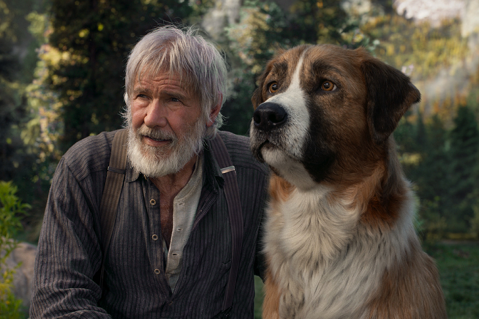
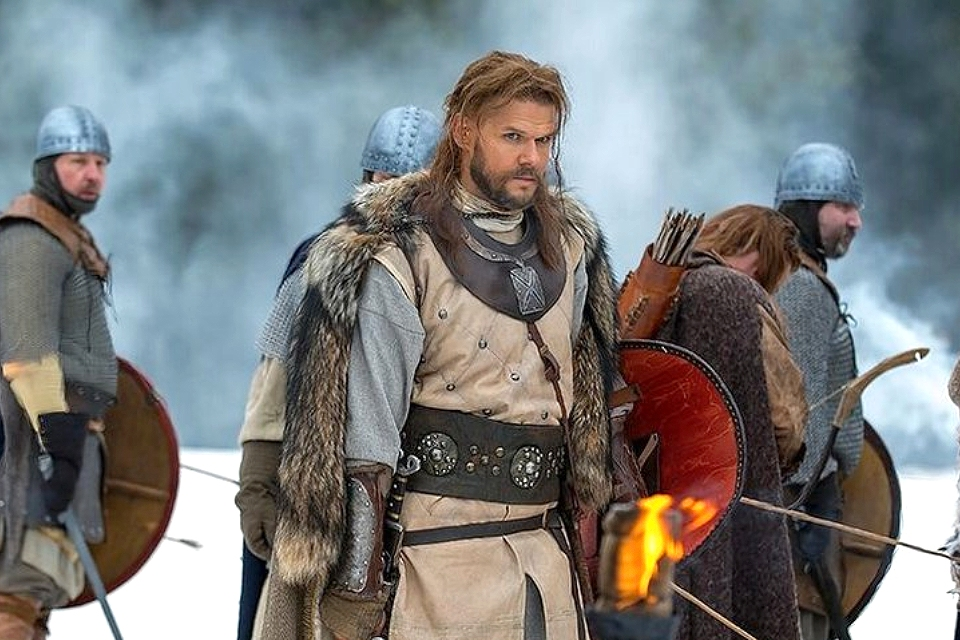

ЖАНРЫ
Всего существует более 90 жанров в кино. Они все разные и неповторимые. Среди них каждый найдет то, что ему по душе.

ДРАМА
Драмы специфически изображают, как правило, частную жизнь человека и его социальные конфликты. Самые популярные драматичекие проекты: 1+1; Зеленая миля; Побег из Шоушенка; Форрест Гамп; Джокер; Игры разума; Паразиты; Великий Гэтсби; Семи жизней; Терминал; Дурак; Крестный отец; Еще по одной; Дневник памяти; Изгой; Одержимость; Прислуга; Реквием по мечте.
КОМЕДИИ
Эти фильмы созданы для того, чтобы заставить зрителей смеяться, развлекаясь. Фильмы в этом стиле традиционно имеют счастливый конец. Самые популярные комедийные проекты: Назад в будущее; Охотники за привидениями; День сурка; В джазе тольк девушки; Один дома; Маска; Как украсть миллилон; Джентельмены предпочитают блондинок; За бортом; Укрощение строптивого.

ИСТОРИЧЕСКИЕ
Это жанр, изображающий исторические эпохи, события и личности прошлого. Различают историко-биографические фильмы о реальных исторических деятелях, иллюстрирующие их жизненный путь («Спартак»), и историко-приключенческие фильмы о вымышленных персонажах прошлых лет, зачастую с остросюжетной интригой («Граф Монте-Кристо»). Исторические фильмы нередко являются экранизациями исторических романов («Война и мир» Л. Н. Толстого).